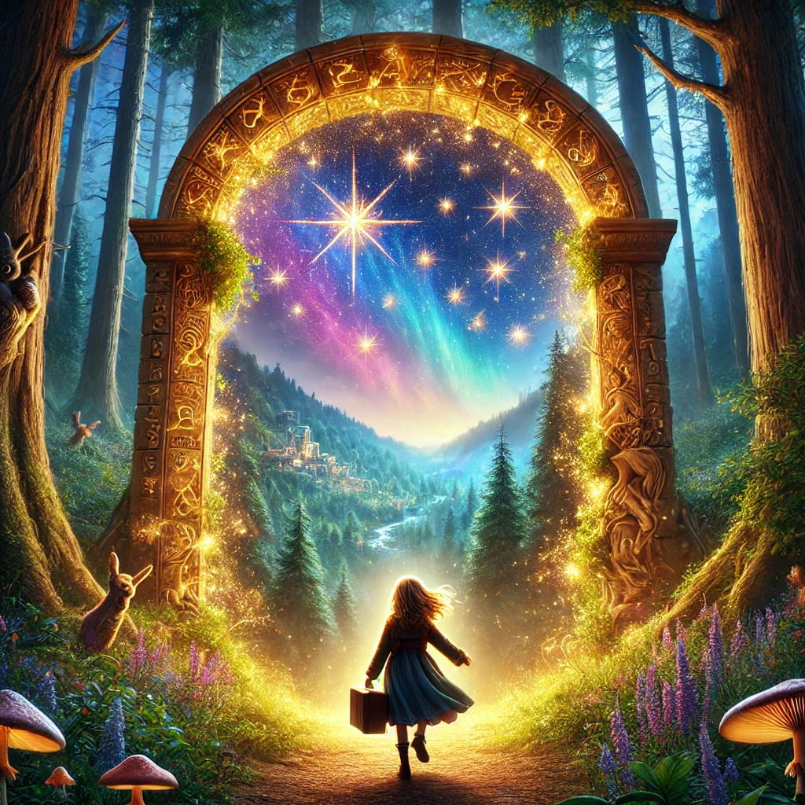

Una Aventura Entre Estrellas

Había una vez, en un pequeño pueblo rodeado de montañas y bosques, una niña llamada Clara. Clara era una niña muy curiosa y siempre soñaba con descubrir nuevos lugares y vivir grandes aventuras. Aunque su vida en el pueblo era tranquila y feliz, Clara sentía que algo muy especial la esperaba más allá de las colinas.
Cada noche, antes de dormir, Clara se asomaba por la ventana y miraba las estrellas. Imaginaba que cada estrella era una puerta a un mundo diferente, lleno de maravillas y sorpresas. Soñaba con volar entre las estrellas y conocer criaturas mágicas, reinos encantados y lugares llenos de misterio.
Un día, mientras exploraba el bosque cerca de su casa, Clara encontró un pequeño cofre dorado enterrado entre las raíces de un árbol viejo. Emocionada, lo abrió y encontró un mapa antiguo que mostraba el camino a un lugar llamado "El Valle de las Maravillas". El mapa estaba lleno de símbolos y dibujos de criaturas fantásticas que Clara nunca había visto.
Sin dudarlo, Clara decidió seguir el mapa y emprender la aventura de su vida. Empacó algunas provisiones y, con el mapa en la mano, se adentró en el bosque. Caminó durante horas, siguiendo los ríos y cruzando colinas, hasta que llegó a un claro iluminado por una luz dorada.
En el centro del claro, encontró una gran puerta hecha de estrellas. Clara, con el corazón lleno de emoción, abrió la puerta y se encontró en un mundo completamente nuevo. El Valle de las Maravillas era un lugar increíble, con cielos de colores brillantes, árboles que susurraban canciones y animales que hablaban.
Clara exploró el valle, conociendo a seres mágicos como el dragón amistoso Draco, la sabia lechuza Aurora y la traviesa hada Estrella. Juntos, vivieron muchas aventuras y Clara descubrió que el valle estaba lleno de misterios y secretos que solo ella podía desvelar.
A lo largo de sus aventuras, Clara aprendió que la verdadera magia estaba en su corazón y en su capacidad de soñar y creer en lo imposible. Aunque el Valle de las Maravillas era un lugar mágico, lo que realmente lo hacía especial era la valentía y la curiosidad de Clara.
Cuando finalmente regresó a casa, Clara sabía que su vida nunca sería la misma. Había descubierto que el mundo estaba lleno de maravillas, y que cualquier cosa era posible si seguía su corazón y sus sueños.
Y colorín colorado, este cuento se ha acabado. Buenas noches, Alondra. ¡Dulces sueños!